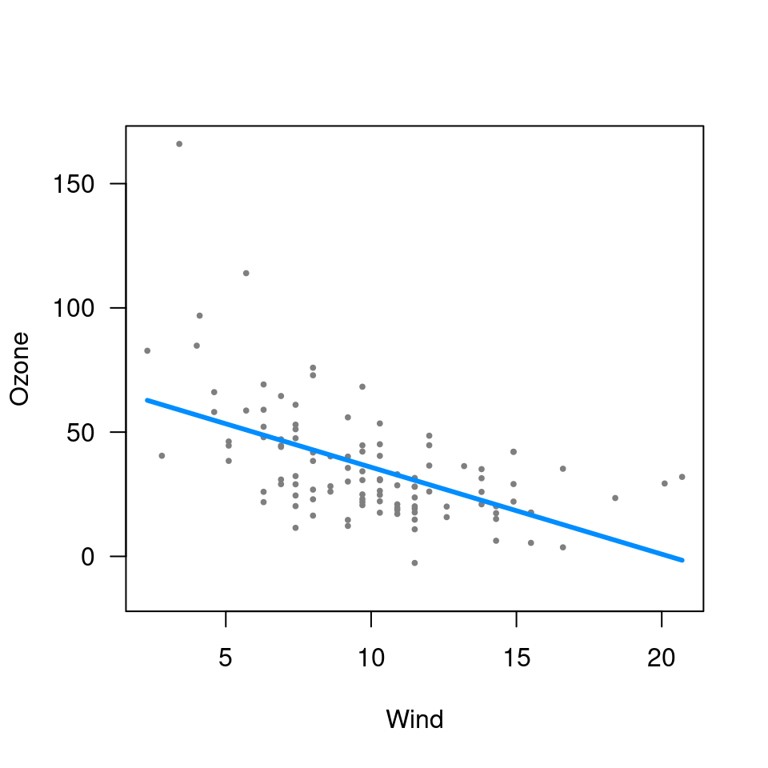
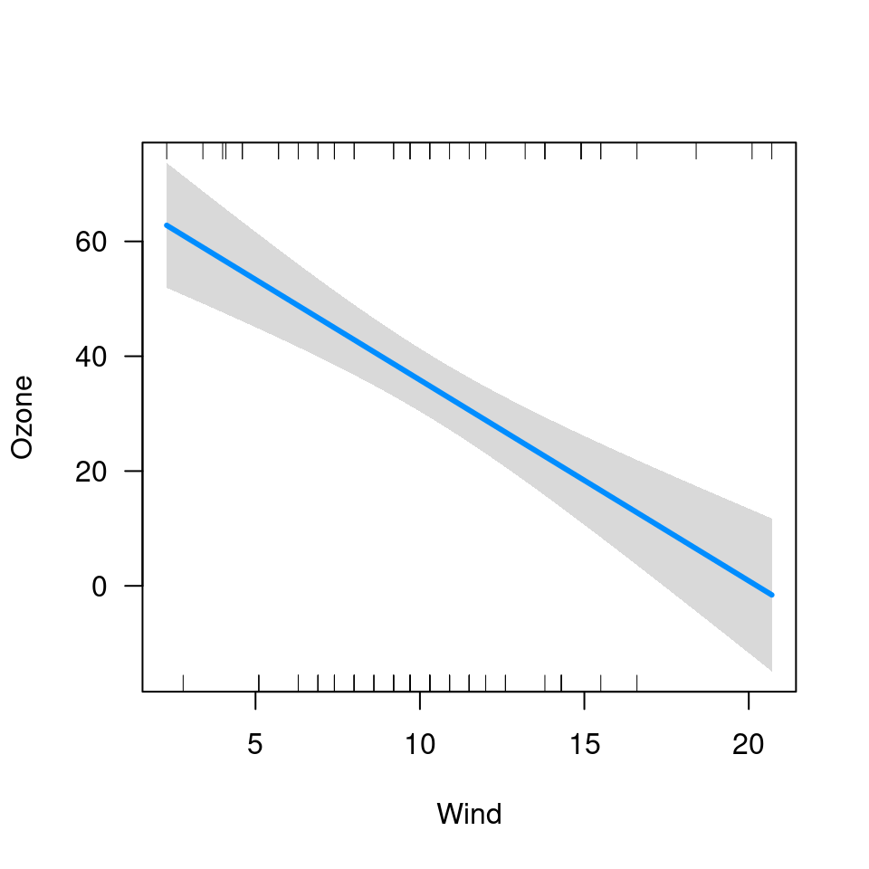
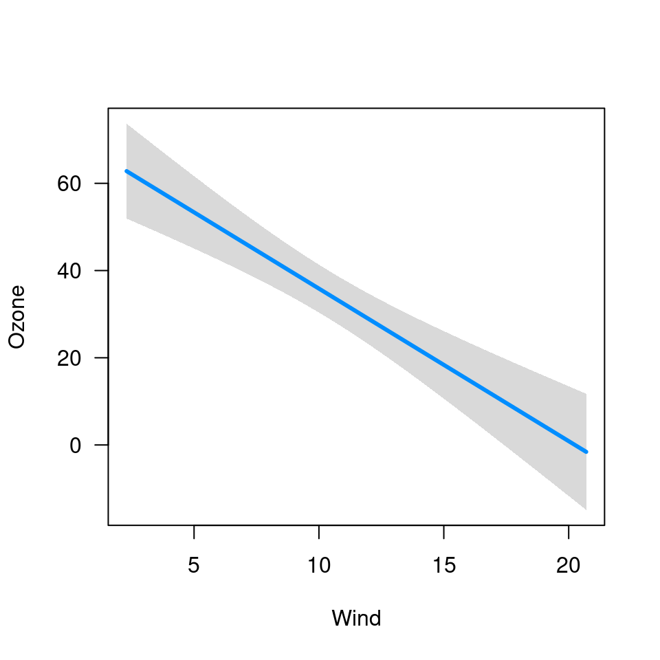
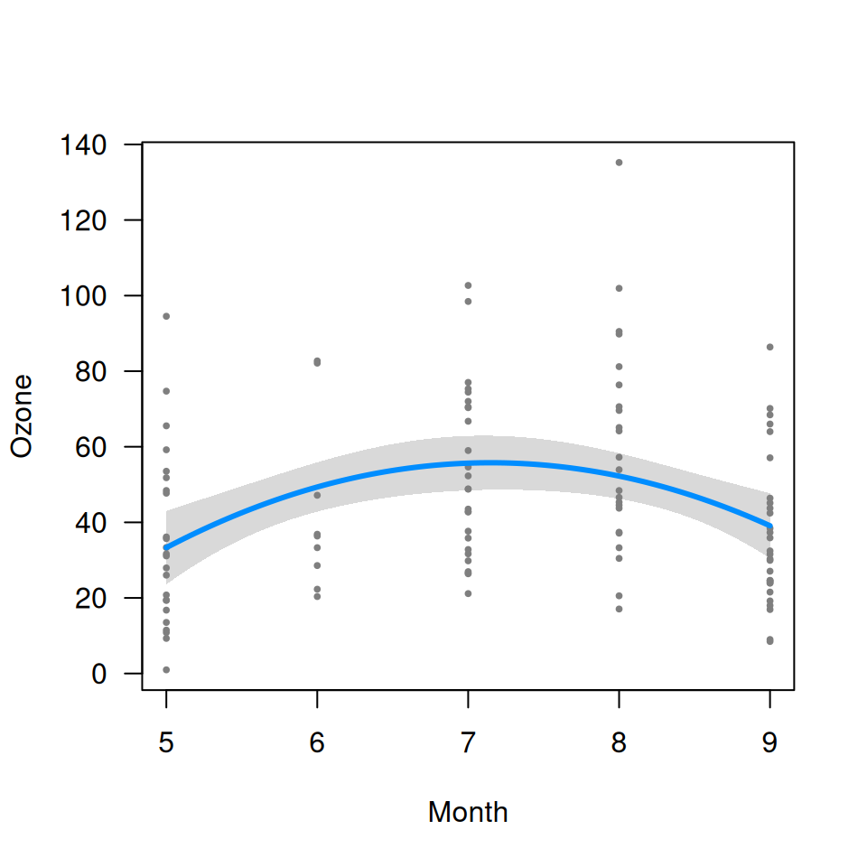
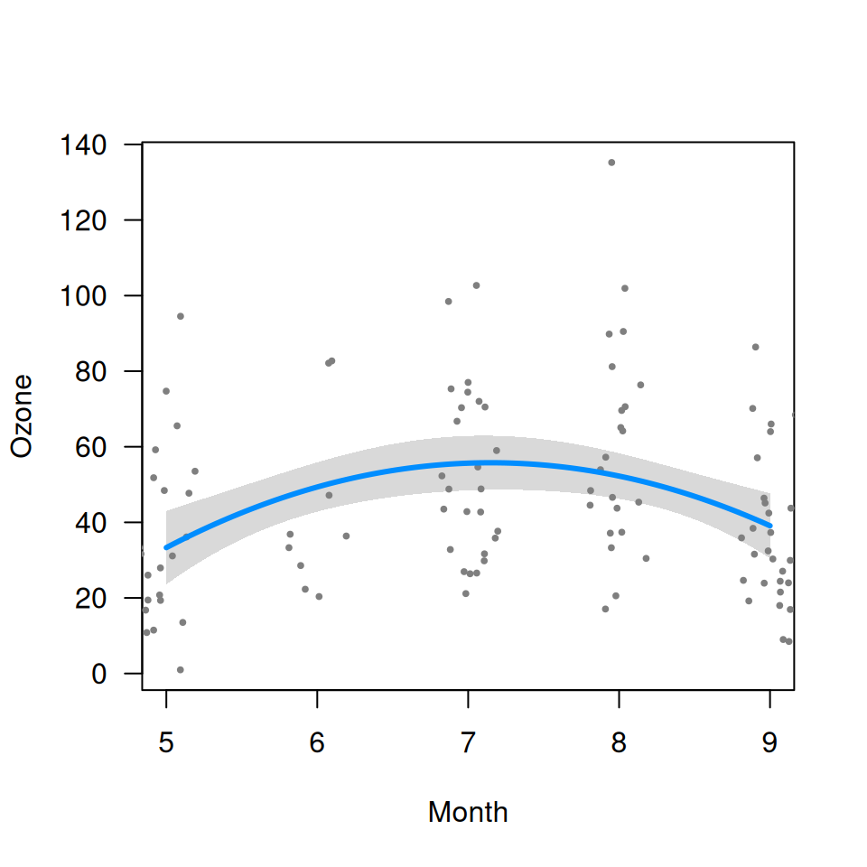
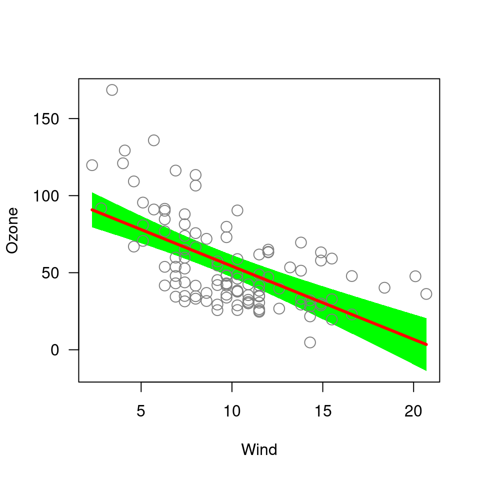
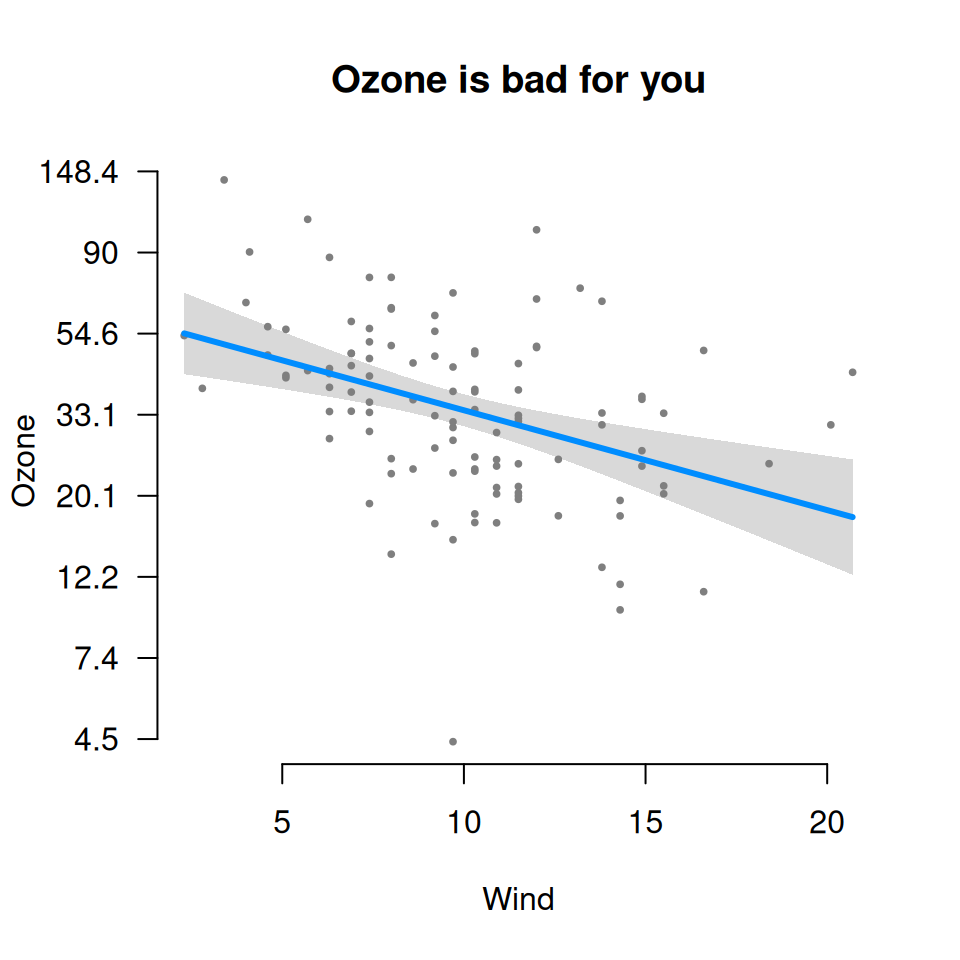
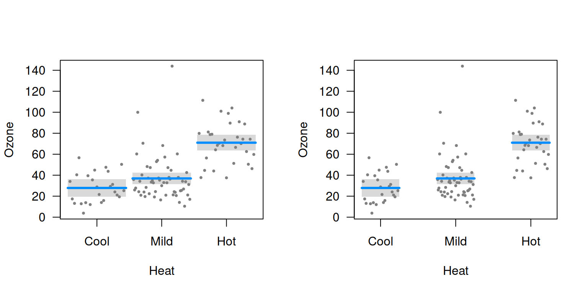

visreg tries to set up pleasant-looking default options,
but everything can be tailored to user specifications. For the plots
below, we work from this general model:
airquality$Heat <- cut(airquality$Temp, 3, labels=c("Cool", "Mild", "Hot"))
fit <- lm(Ozone ~ Solar.R + Wind + Heat, data=airquality)Turning on/off plot components
By default, visreg includes the fitted line, confidence
bands, and partial residuals, but the residuals and the bands can be
turned off:
visreg(fit, "Wind", band=FALSE)
visreg(fit, "Wind", partial=FALSE)
Note that by default, when you turn off partial residuals, visreg tries to display a rug so you can at least see where the observations are. You can turn this off too:
visreg(fit, "Wind", partial=FALSE, rug=FALSE)
Finally, there is an option for displaying separate rugs for positive
and negative residuals on the top and bottom axes, respectively, with
rug=2 (this is particularly useful for logistic regression):
visreg(fit, "Wind", rug=2, partial=FALSE)
Jittering
If there are many ties in a numeric variable x,
jittering can be helpful way to avoid overplotting:

visreg(fit, "Month", jitter=TRUE)
Appearance of points, lines, and bands
Specifying col='red' won’t work, because
visreg can’t know whether you’re trying to change the color
of the line, the band, or the points. These options must be specified
through separate parameters lists:
-
line.par: Controls the appearance of the fitted line -
fill.par: Controls the appearance of the confidence band -
points.par: Controls the appearance of the partial residuals
Each of these can be abbreviated, as in the example below:

Generic plot options
Other options get passed along to plot, so any option
that you could normally pass to plot, like
main, will work fine. Here’s an example that includes a
bunch of options like this:
fit <- lm(log(Ozone) ~ Solar.R + Wind + Temp, data=airquality)
visreg(fit, "Wind", yaxt="n", main="Ozone is bad for you", bty="n", ylab="Ozone")
at <- seq(1.5, 5, 0.5)
lab <- round(exp(at), 1)
axis(2, at=at, lab=lab, las=1)
Whitespace for factors
When x is a factor, the whitespace option
controls the amount of whitespace in between the categories:
fit <- lm(Ozone ~ Solar.R + Wind + Heat, data=airquality)
par(mfrow=c(1,2))
visreg(fit, "Heat", whitespace=.1)
visreg(fit, "Heat", whitespace=.5)